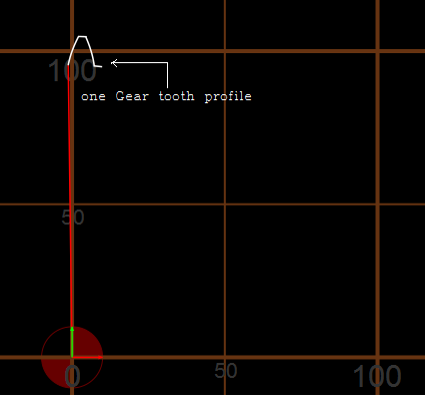
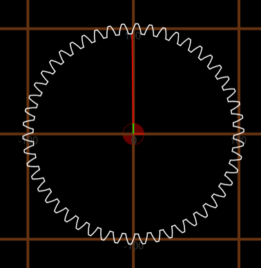

CNC Programming to manufacture gears on 3 axis CNC-VMC
Guide: Prof. N Ramakrishnan
Traditionally gears are manufactured using gear hobbing and shaping which require
special machines. Gears are not manufactured on a 3 axis vertical milling centre (VMC) as
there is no feature to program the CNC milling machine to cut involute profiles
which are an essential part of a gear tooth.
This project enables manufacturing of gears on 3 axis CNC-VMC possible, by using CNC milling machine to
create involute shapes.
Tolerancing was used to maintain the quality of approximate profile. Varying tolerance range it was possible to program gears for various grades.
An algorithm was developed that automatically generated the G-code for the a gear by inputting the diameter, module and desired grade of the gear. Table 1 shows the generated G-code for a single gear tooth

Entire gear simulated using the proposed technique.
